Nas últimas décadas, o sistema financeiro passou por um processo acelerado de bancarização, entendido como a ampliação do acesso da população a contas bancárias, meios de pagamento e serviços financeiros formais. Esse fenômeno foi impulsionado tanto por políticas públicas de inclusão financeira quanto pela necessidade de maior controle e rastreabilidade das operações monetárias.
Paralelamente, houve uma intensa evolução das ferramentas digitais, que transformou a forma como indivíduos e empresas interagem com instituições financeiras. O uso de aplicativos bancários, cartões de crédito e débito, paga mentos instantâneos (como o PIX) e plataformas de investimento online tornou-se rotina. Esse ambiente digitalizado ampliou significativamente a quantidade de dados gerados pelas transações, permitindo que movimentações financeiras sejam monitoradas com mais rapidez e precisão.
No contexto investigativo, essa evolução representa um avanço relevante: se, por um lado, a digitalização facilita a circulação de recursos e pode ser utilizada para práticas ilícitas, por outro, também gera rastros documentais e eletrônicos que fortalecem a capacidade de fiscalização, controle e investigação por parte das autoridades competentes.
Nesse sentido, os dados bancários podem conter informações valiosas para a equipe de investigação. Sua análise proporciona ao investigador acessar dados sobre transações bancárias específicas, identificar padrões de movimentação financeira, reconhecer vínculos com pessoas físicas e jurídicas, detectar patri mônios, descobrir a localização de eventuais operações, dentre outros aspectos.
Conceitualmente, análise bancária pode ser definida como o exame de transa ções bancárias ocorridas em contas de pessoas físicas e/ou jurídicas investigadas, quando há suspeitas de que bens, direitos e/ou valores ilícitos foram operados por meio de contas bancárias.
Essa análise pode ser alcançada por meio de diversas ferramentas. Neste documento serão apresentadas técnicas a partir do próprio Simba, bem como por meio do painel Ciaf-BANCÁRIO e por meio de ferramentas de visualização das operações bancárias em forma de gráfico.
Deve-se ressaltar, no entanto, que cada ferramenta de análise não é completa em si. Elas são complementares e possuem funcionalidades que se adequam a situações específicas com que se deparam os investigadores.
Inicialmente, será apresentada a análise no próprio Simba.
Como visto no Item 3.2, o Simba recepciona os dados bancários tais quais enviados pelas entidades obrigadas na decisão judicial. Além dessa funcionalidade, o Simba permite que os dados sejam analisados em seu próprio ambiente.
Após a criação do caso no Simba pela autoridade que preside o inquérito policial, esta precisa conceder acesso à equipe de investigadores.
IMPORTANTE: Apenas a autoridade policial pode criar o caso Simba e conceder acesso à equipe que analisará os dados bancários.
Concedido o acesso pela referida autoridade, a tela do caso no Simba trará as seguintes informações.
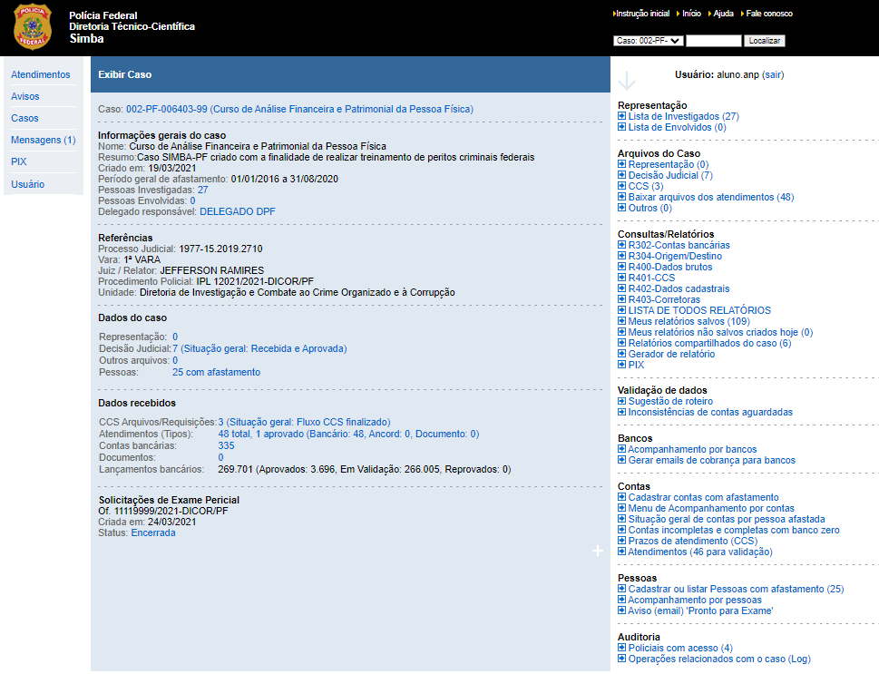
Logo abaixo do número do caso, o sistema traz informações gerais, as quais são: nome do caso, resumo da investigação, data de criação, período geral de afastamento, quantidade de pessoas investigadas e envolvidas e o delegado responsável.
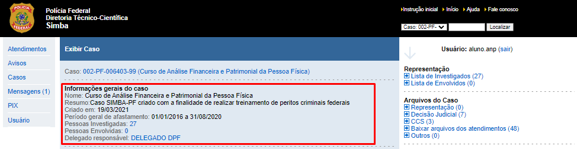
Em seguida, são dispostas as referências jurídicas do caso. Nesse campo, estão contidos o número do processo judicial, bem como a vara à qual está vinculado, o juiz/relator, número do procedimento policial e unidade policial a que está relacionado.
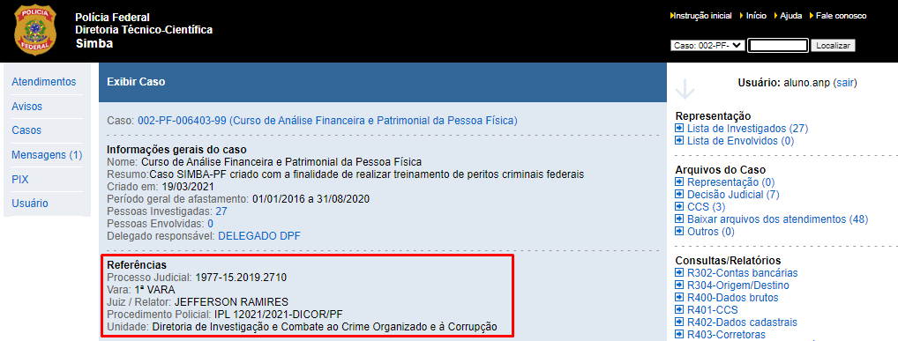
No campo Dados do Caso, são informadas quantas representações elabo radas pela autoridade policial estão carregadas, o número de decisões judiciais, outros arquivos e a quantidade de pessoas com afastamento de sigilo bancário vinculadas ao caso.
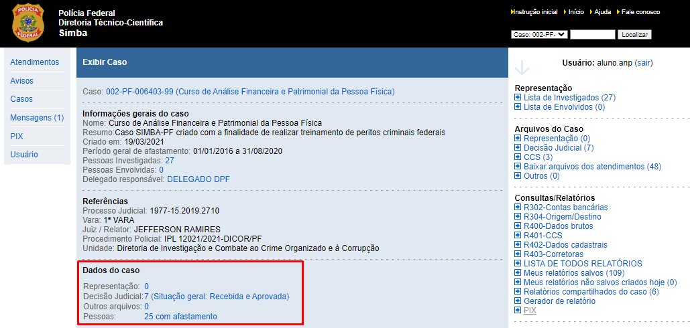
Por fim, o caso traz informações sobre os dados recebidos pelas instituições financeiras: número de arquivos / requisições CCS e status do fluxo CCS, quan tidade por tipo de atendimento (Bancário, Ancord e Documento), quantas contas bancárias, documentos e lançamentos bancários estão contidos no caso. Em relação aos lançamentos bancários, o Simba detalha a quantidade por tipo de lançamento, que são: Aprovado, Em Validação e Reprovado.
Ademais, há informações sobre a solicitação de exame pericial, especifica mente o número do ofício, quando foi criada e seu status.
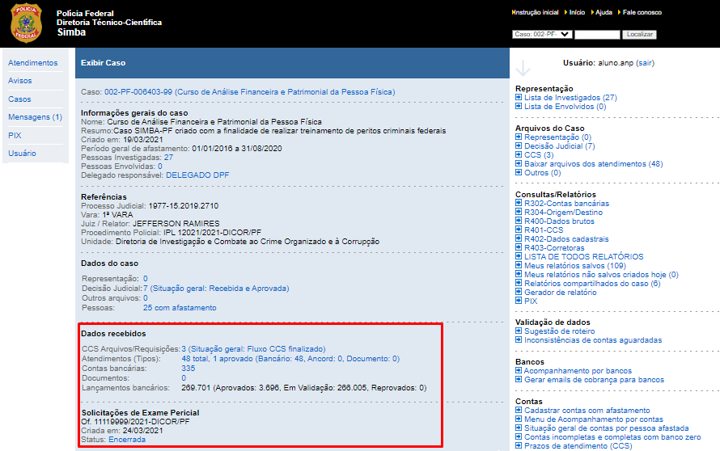
Cabe destacar uma característica do Simba que é comum a todas as páginas do sistema. Todos os textos destacados em cor azul possuem um link que permite direcionar o usuário para uma página com informações adicionais. No caso da tela anterior, por exemplo, ao se clicar no número de atendimentos, o policial acessará a lista dos atendimentos do caso.
Antes de iniciar a análise dos dados bancários, o policial deverá realizar sua validação. A validação é um procedimento de responsabilidade da equipe de investigação, cujo objetivo é verificar:
A correspondência integral e exata dos dados em relação ao esperado, considerando a respectiva decisão judicial;
A consistência dos dados em seu aspecto qualitativo (consistências de datas, sobreposições, níveis de identificação etc.)
Para facilitar esse procedimento de validação, foi criado, na tela inicial de cada caso, o menu “Validação de dados” com o link “Sugestão de roteiro”:
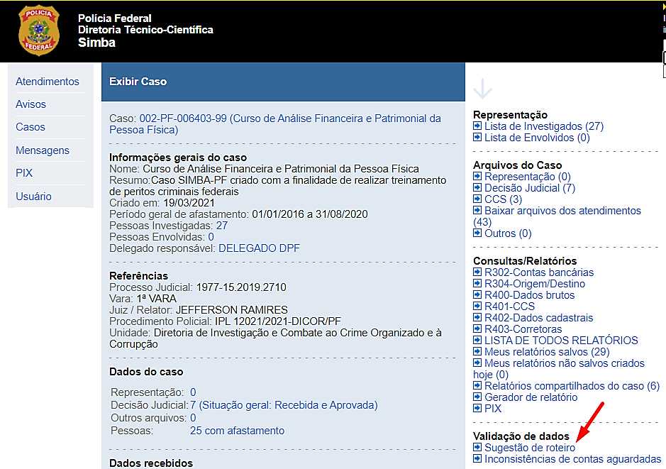
Este roteiro é somente uma sugestão, tendo o usuário liberdade para definir se prefere seguir ou fazer na sequência que achar melhor. É apresentado um passo a passo, sendo que em alguns passos o sistema apresenta informações personalizadas baseadas no caso e em outros indica passos genéricos.
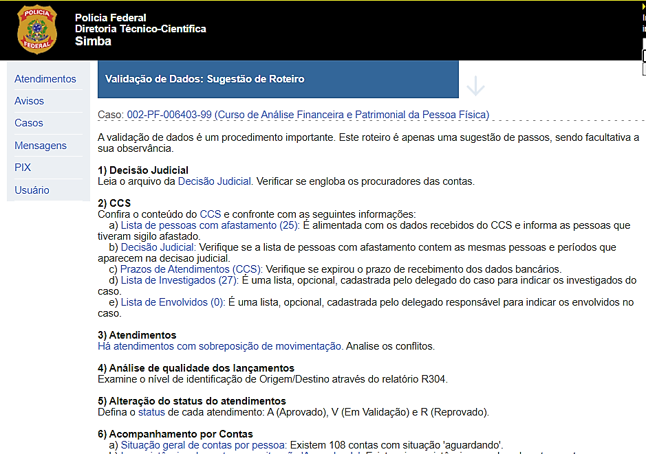
Realizada a validação, o investigador pode iniciar a análise dos dados bancários. Nesse ponto, é de suma importância que se proceda a um estudo prévio do Inquérito Policial, no intuito de se conhecer a investigação, bem como os principais atores nela envolvidos. Ademais, destaca-se a essencialidade de que a autoridade policial, em conjunto com a equipe de investigação, apresente quesitos que norteiem o policial que realizará a análise dos dados.
Nesse aspecto, deve-se ressaltar que os dados bancários trazem uma vasta gama de informações e os quesitos norteadores servem como estrutura basilar para que a equipe de investigação mantenha foco durante a análise.
Com base nesses quesitos, o policial pode realizar pesquisas direto no Simba, na aba Consultas/Relatórios, utilizando os relatórios que melhor convenham às necessidades do investigador.
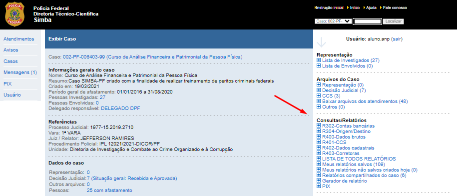
É nesse campo que o policial conseguirá acessar os dados oriundos das instituições financeiras. Como mencionado no item 3.2 deste Caderno, os dois principais relatórios são: o R302-Contas Bancárias e o R304-Origem/Destino. Dentre eles, o R304 é o que traz dados detalhados sobre as transações bancárias, incluindo sua origem/destino, e será detalhado em seguida.
R304 – Origem/Destino
Para acessar os dados do R304, o usuário precisa realizar dois passos obri gatórios. No Passo 1, é possível selecionar os atendimentos vinculados ao caso.
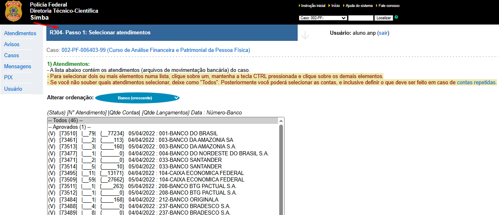
O Passo 2 proporciona a seleção das contas bancárias contidas nos atendi mentos transmitidos pelas instituições financeiras. Nessa etapa, o policial pode escolher: pessoas vinculadas às contas, vínculo entre pessoas e contas, instituições financeiras, tipo de conta, contas bancárias e, por fim, um tratamento para repetição de contas.
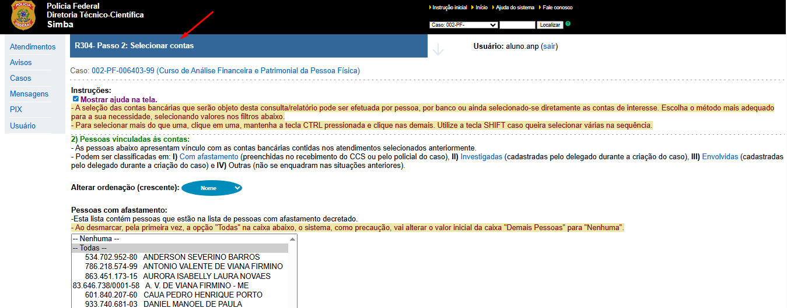
Oportuno destacar que o Simba proporciona a realização de diversos tipos de filtros, de modo a auxiliar o policial na resposta aos quesitos. Eles podem ser acessados seguindo os passos de Filtros de Seleção, como pode ser visto na imagem abaixo.
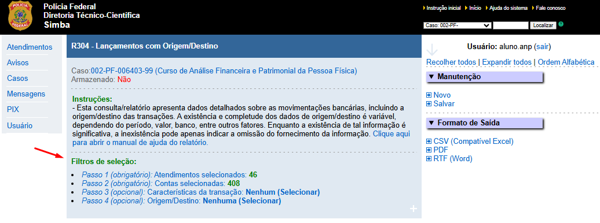
Enquanto no Passo 3, o investigador pode selecionar filtros referentes às características das transações, no Passo 4, são dispostos campos para escolha de informações sobre origem e destino. Os filtros contidos nestes dois passos são os seguintes:
O R304 em formato CSV ainda possibilita o uso de ferramentas de análise por meio de softwares de Business Inteligence – BI. O item a seguir trará informações sobre essa metodologia de análise.
Permitem análises por meio da leitura visual ou de funcionalidades como filtros, fórmulas, gráficos e tabelas dinâmicas. Exemplos: MS Excel e OpenOffice Calc.:
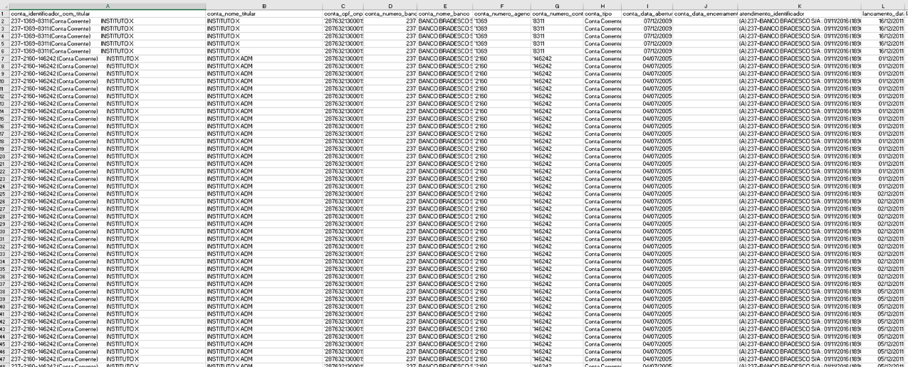
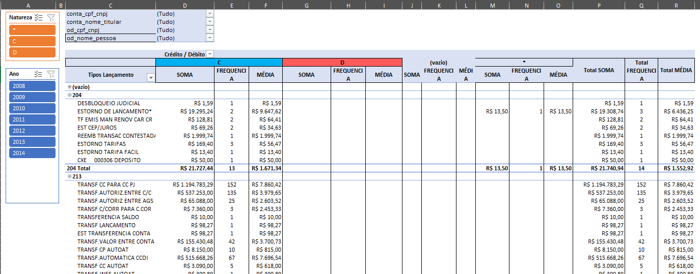
Além do Simba, o policial federal possui outra ferramenta que o auxilia sobre maneira na análise e validação dos dados bancários, o painel Ciaf-BANCÁRIO. Após download do R304 a partir do Simba, o arquivo deve ser salvo na pasta C:\Ciaf\Simba_ARQUIVOS\Arquivos do R304-R400. Esse é o local onde o aplicativo Ciaf-BANCÁRIO buscará os dados que serão carregados no painel da ferramenta de BI.
Por meio desse aplicativo, é possível realizar diversas análises por meio de 11 Business Intelligence (BI) é um conjunto de técnicas, ferramentas e processos usados para coletar, organizar, analisar e apresentar dados com o objetivo de apoiar a tomada de decisões estratégicas em uma organização. BI transforma dados brutos — como registros financeiros, operacionais, comerciais ou de clientes — em informações úteis e compreensíveis. Ele permite que gestores e analistas entendam o desempenho da empresa, identifiquem oportunidades, detectem problemas e tomem decisões baseadas em evidências. pastas específicas. As primeiras pastas proporcionam uma visão geral dos arquivos carregados na ferramenta, bem como um resumo do caso completo.
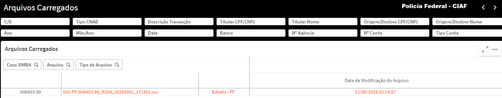
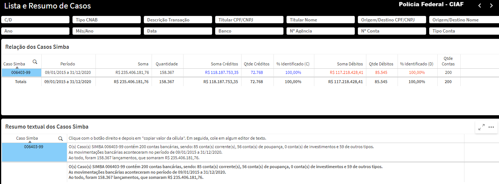
Em seguida, pode-se visualizar informações sobre o volume de transações bancárias realizadas pelos Titulares, ou seja, pelas pessoas físicas e jurídicas cujo sigilo bancário foi afastado.
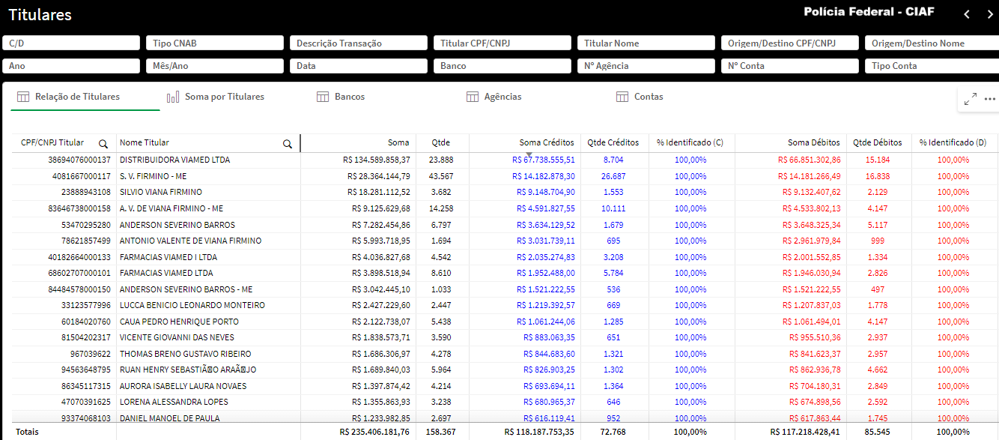
A pasta Origem/Destino traz informações sobre o montante transacionado pelos Titulares com suas contrapartes.
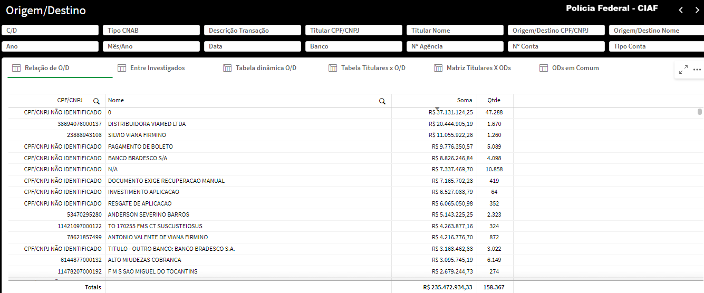
O aplicativo ainda fornece uma visão dos dados em forma de Extrato Bancário. É nessa pasta que estão os dados completos, assim como vieram do R304. Aqui o policial tem duas formas de visualizar os dados: Extrato Resumido, com as principais colunas oriundas do R304, e completo (padrão PF), onde estão as 38 colunas do relatório do Simba.
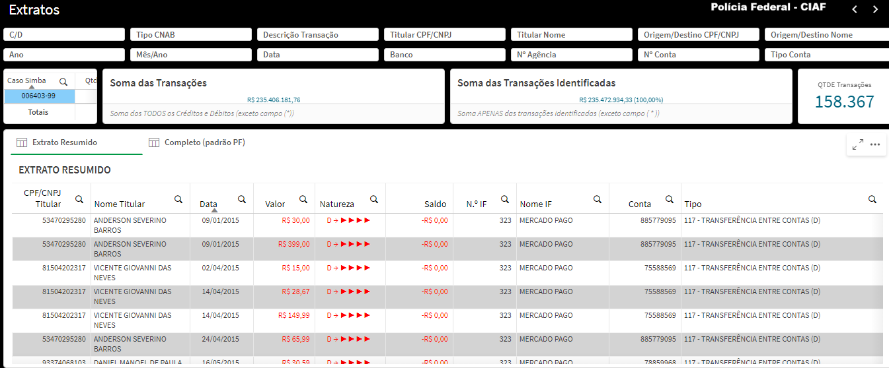
O investigador também consegue analisar os dados conforme características específicas das transações, bem como visualizá-las cronologicamente, em formato de tabela ou de gráfico (ver imagens a seguir).
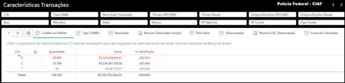
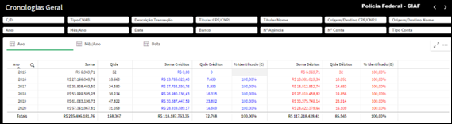
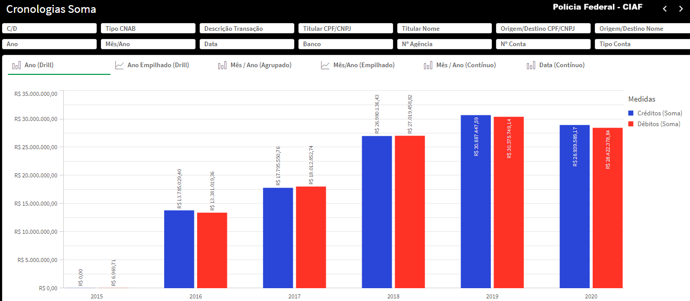
As próximas duas pastas permitem que o policial acompanhe a evolução dos saldos das contas bancárias ao longo do período do afastamento, em formato de tabela e de gráfico.
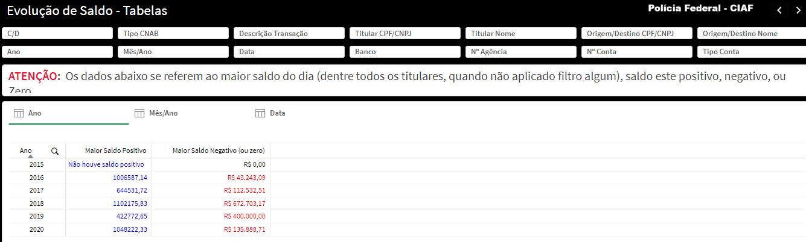
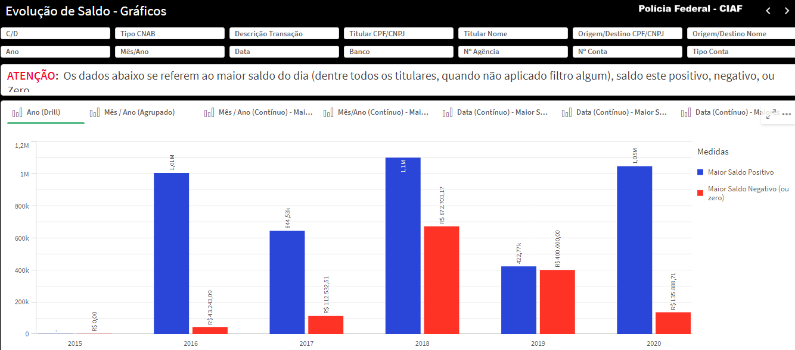
Também é possível realizar diversos cruzamentos com bases de dados externas. É o que pode ser visto nas pastas Exchange de Criptomoedas, que relaciona automaticamente transações dos Titulares com operadores de criptomoedas. Essa informação é de grande relevância para a investigação, por fornecer um indicativo de que os investigados estejam realizando transações com criptomoedas.
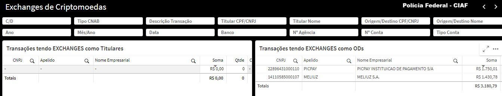
No mesmo sentido, a pasta Pessoas de Interesse proporciona que o policial alimente uma planilha com informações de pessoas físicas ou jurídicas e o apli cativo apontará se alguma dessas pessoas realizou transações bancárias com os Titulares alvos do afastamento do sigilo bancário.
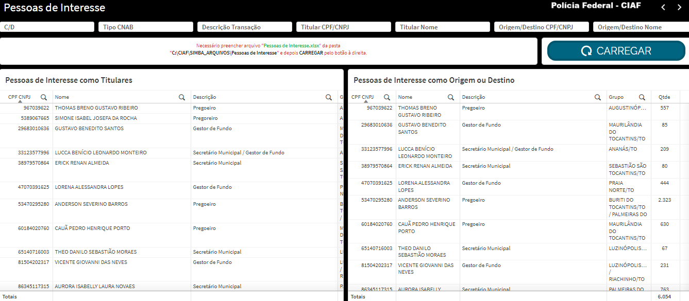
O aplicativo ainda permite a visualização das transações do caso em forma de mapas, seja pela ótica dos Titulares ou das contrapartes Origem/Destino.
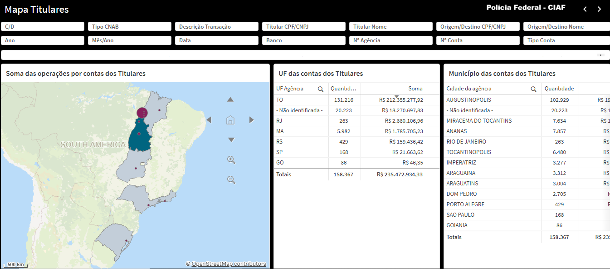
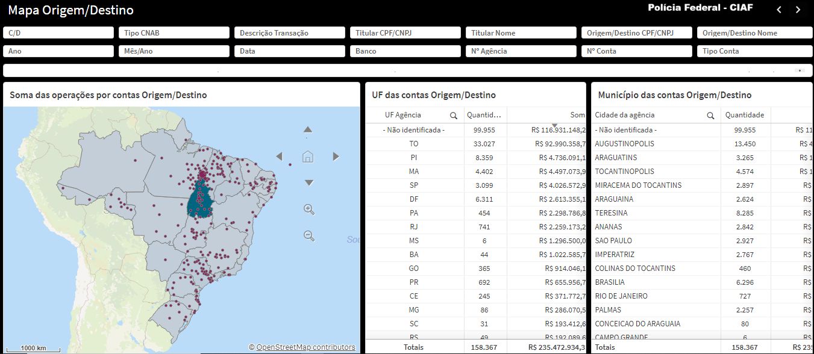
Por fim, é possível exportar as transações bancárias do caso analisado para serem geradas redes em forma de gráfico. A exportação dos dados ocorre através da pasta “Para Diagramar”. Essas transações podem ser exportadas após aplicação de filtros, ou seja, sem que seja necessário extrair toda a rede de dados completa.
A equipe de investigação pode se valer de softwares de diagramação de vínculos, cuja representação permite a visualização das transações bancárias em forma de gráfico, facilitando o entendimento da rede na totalidade.
Para criar esses grafos, é necessário baixar os arquivos através da aba “Para Diagramar” no aplicativo Ciaf-Bancário, em seguida, deve-se utilizar especifi cações de importação para cada tipo de visualização que se deseja. Algumas especificações podem ser vistas abaixo.
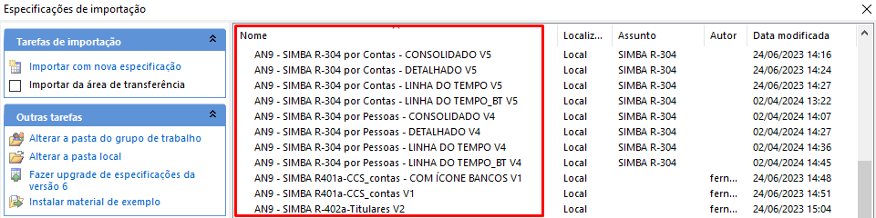
Assim, os dados das transações bancárias oriundas da quebra de sigilo ban cário poderão ser visualizados graficamente, sob a ótica de contas ou pessoas, bem como cronologicamente.
Diversas técnicas de investigação podem ser aplicadas por meio desta ferra menta, como a identificação de vínculos entre pessoas por meio de vários níveis ou etapas de transações bancárias. Outra possibilidade é vislumbrar graficamente o fluxo do dinheiro entre contas investigadas. Outrossim, a equipe de investigação também consegue detectar possíveis elos relevantes numa rede de transações, auxiliando, inclusive, na estratégia da investigação integralmente.
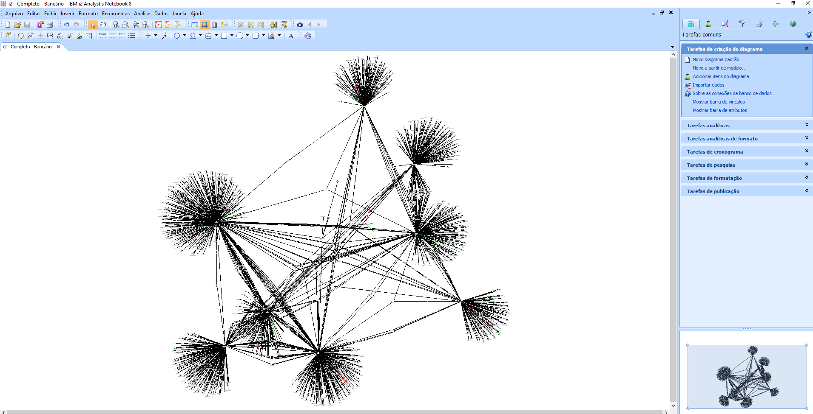
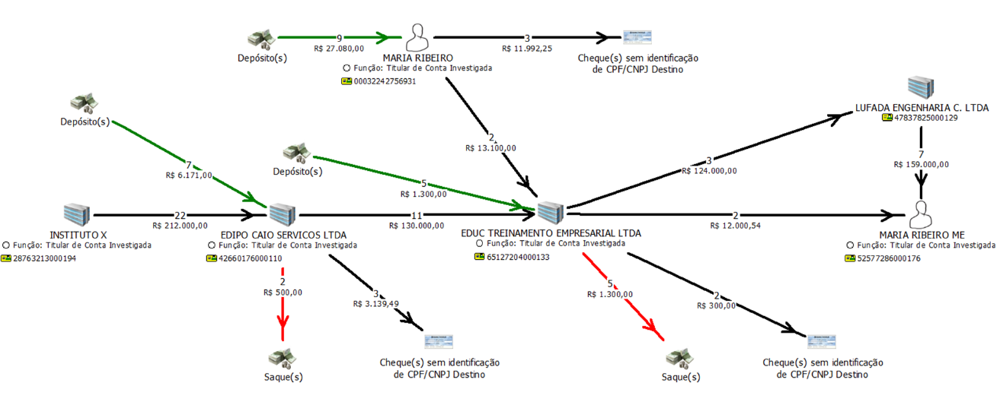
O sigilo bancário não abrange exclusivamente os dados das transações ban cárias. Há diversas outras informações complementares que podem ser acessadas pela equipe de investigação, mediante requisição às instituições financeiras.
Nesse sentido, é essencial que se verifique o que determinou a decisão judicial que amparou o afastamento do sigilo bancário, a fim de não se prejudicar a investigação requisitando informações que não estejam deferidas pelo Judiciário.
Neste item do Caderno, serão apresentadas algumas dessas informações.
Refere-se a documentação acessória, como formulários de cadastro, contratos de abertura de conta, contratos de empréstimos, documentos contábeis, procura ções etc. Esses documentos permitem identificar o titular, cotitulares, procuradores e representantes legais.
Trata-se das informações adicionais que qualificam uma operação financeira. Incluem, por exemplo, dados sobre data e horário específicos, finalidades decla radas, instruções associadas a transferências eletrônicas e justificativas formais fornecidas pelo correntista. Esses elementos ajudam a verificar a veracidade da movimentação e a detectar inconsistências.
O uso de cartões de crédito constitui fonte relevante de investigação. As faturas revelam padrões de consumo, saques em caixas eletrônicos, transações internacionais e eventuais indícios de lavagem de dinheiro por meio de compras simuladas ou movimentações incompatíveis com a renda declarada.
Detalhamento a respeito dos principais atores no contexto de operações com cartões de crédito pode ser acessado por meio da página do Ciaf na intranet https://pfgovbr.sharepoint.com/sites/AnliseBancria/SitePages/Cart%C3%A3o-de- Cr%C3%A9dito.aspx.
No âmbito das transações internacionais, a análise de contratos de câmbio, ordens de pagamento e registros junto a instituições financeiras autorizadas é fundamental. Esses documentos permitem identificar remessas ao exterior, internalização de recursos e operações destinadas à ocultação de patrimônio em jurisdições com menor transparência, assim como para evidenciar possíveis transações de evasão de divisas.
Apesar da redução do uso de cheques, a microfilmagem ainda é um recurso relevante. Por meio dela, é possível identificar a titularidade de quem emitiu e de quem depositou o cheque, bem como acompanhar cadeias de compensação. A microfilmagem oferece valor probatório, especialmente em operações realizadas fora do sistema eletrônico.
As chamadas “fitas de caixa” são registros internos das instituições financeiras e casas de câmbio que detalham as operações realizadas em guichês e caixas físicos. Esses documentos permitem rastrear saques, depósitos e trocas de moeda, identificando horário, valor e, em alguns casos, o atendente responsável.
A depender da Instituição Financeira, a chamada “Fita de Caixa” pode ser conhecida por outras nomenclaturas, tais como: bobina, fita detalhe, fita de sessão de atendimento bancário etc.
Mais informações sobre o funcionamento das fitas de caixa podem ser aces sadas pela página do Ciaf na intranet, pelo endereço https://pfgovbr.sharepoint. com/sites/AnliseBancria/SitePages/Fita-de-Caixa.aspx.
As gravações de câmeras de segurança (CFTV) instaladas em agências bancárias, casas de câmbio ou estabelecimentos comerciais podem confirmar a presença física de indivíduos durante a realização de transações. A vinculação da imagem ao registro financeiro fortalece a evidência e auxilia na identificação de cúmplices ou laranjas.
Deve-se atentar para o prazo que as agências costumam manter essas grava ções. Esse prazo costuma ser de 90 dias, podendo chegar a 180 dias, conforme política interna da instituição.
Os identificadores vinculados às operações — como códigos de autenticação, números de dispositivos móveis ou tokens de segurança — possibilitam rastrear a autoria de transações eletrônicas. A análise desses elementos pode revelar vínculos entre diferentes contas ou demonstrar o uso de dispositivos por pessoas diversas.
O endereço de protocolo de internet (IP) utilizado em acessos a contas bancá rias online ou aplicativos financeiros constitui evidência relevante. A partir dele, é possível identificar a localização geográfica, o provedor de internet e, em alguns casos, o dispositivo usado, permitindo verificar se os acessos são compatíveis com o perfil do investigado.
Consiste no acompanhamento em tempo real da movimentação financeira das contas de pessoas físicas ou jurídicas sob investigação. Essa medida permite o monitoramento imediato de créditos e débitos, possibilitando identificar trans ferências suspeitas no exato momento em que ocorrem. Trata-se de instrumento relevante para evitar a dispersão de valores, mapear rotas de ocultação de recursos e subsidiar medidas cautelares, como bloqueios ou arrestos.
Os boletos bancários representam outro meio importante de investigação, ao detalharem operações de pagamento, e podem indicar vínculos entre o pagador e o beneficiário.
A análise dos boletos permite identificar empresas de fachada utilizadas para recebimento de recursos, bem como verificar se os pagamentos estão vinculados a transações comerciais legítimas ou se possibilitam mascarar operações de lavagem de dinheiro. Além disso, dados como código de barras, instituição arrecadadora e conta de destino oferecem rastreabilidade adicional para reconstruir fluxos financeiros.
Mais informações sobre o funcionamento dos boletos bancários estão detalha das na página do Ciaf na intranet, pelo endereço https://pfgovbr.sharepoint.com/ sites/AnliseBancria/SitePages/Como-fazer-uma-an%C3%A1lise-de-um-BOLETO- BANC%C3%81RIO-.aspx.
A manutenção da cadeia de custódia dos arquivos provenientes do relatório R304 é garantida pelo próprio Simba, uma vez que os dados oriundos das insti tuições financeiras ficam ali armazenados nos respectivos atendimentos.
No entanto, sugere-se que a equipe de investigação gere um código HASH para os arquivos baixados do Simba, e inclua esse código em seu relatório de análise, a Informação de polícia judiciária de Análise Bancária. Tal ação demonstra o comprometimento da equipe com o tratamento dos dados analisados.